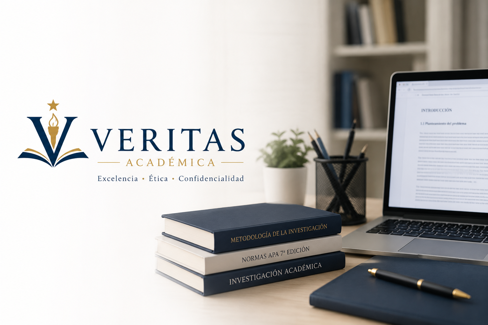

📘
Asesoría de tesis
Apoyo en tema, anteproyecto, capítulos, metodología, estructura y revisión general.
Acompañamos a estudiantes, investigadores y profesionales en el desarrollo de tesis, artículos científicos y proyectos de investigación con estándares de calidad académica.

Soluciones pensadas para acompañarte en distintas etapas de tu proyecto académico.
Apoyo en tema, anteproyecto, capítulos, metodología, estructura y revisión general.
Orientación para objetivos, problema, justificación, hipótesis, variables y diseño metodológico.
Aplicación de APA 7, Vancouver, Chicago y formatos institucionales según el caso.
Revisión de redacción, ortografía, coherencia, estructura, estilo y presentación formal.
Trabajamos con seriedad, respeto y organización para brindar una experiencia profesional.
Atención seria y enfocada en tus objetivos académicos.
Tu información y documentos se manejan con reserva.
Revisión cuidadosa y criterios académicos claros.
Cada proyecto se analiza según sus necesidades.
Procesos, plazos y entregas definidos desde el inicio.
Acompañamiento responsable y transparente.
Un proceso claro para que sepas qué esperar en cada etapa.
Nos explicas qué necesitas.
Definimos alcance, tiempo y precio.
Confirmas condiciones y forma de pago.
Trabajamos con seguimiento y orden.
Recibes el resultado final y revisiones acordadas.
Veritas Académica nace para brindar acompañamiento académico profesional, ético y confidencial a estudiantes, investigadores y profesionales.
Brindar asesoría y acompañamiento académico con calidad, confidencialidad y ética profesional.
Ser una empresa académica reconocida en Guatemala por excelencia, confianza y compromiso.
Excelencia, ética, confidencialidad, profesionalismo, compromiso y honestidad.
El valor final se define según el tipo de proyecto, extensión, nivel académico y urgencia.
Ideal para estudiantes que ya tienen un avance y necesitan orientación clara.
Para quienes necesitan corrección, estructura, formato y seguimiento académico.
Para proyectos que requieren apoyo continuo desde la planificación hasta la entrega.
Cuéntanos el estado de tu proyecto y te indicaremos qué tipo de apoyo puede ajustarse mejor a tu caso. Esta revisión inicial no sustituye una asesoría completa, pero te ayuda a saber por dónde empezar.
No. La atención y las entregas se realizan de lunes a viernes. Los mensajes enviados en días no laborables se responden el siguiente día hábil.
El pago puede ser único o en dos partes: 50% de anticipo y 50% contra entrega final, con un recargo administrativo del 5% sobre el valor total.
No. Veritas Académica ofrece asesoría y acompañamiento, pero los resultados dependen del cliente y de las decisiones de terceros.
Sí. Toda la información del cliente se maneja de forma confidencial y no se comparte con terceros sin autorización.
Conversemos sobre tu necesidad académica y preparemos una propuesta clara.
Solicitar asesoría por WhatsApp